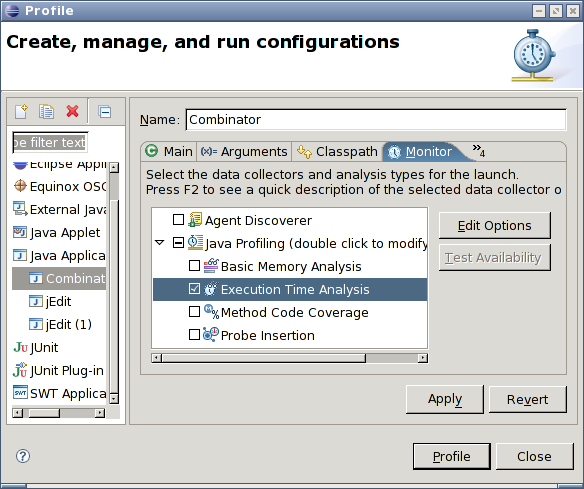
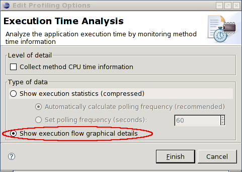

Creating Java runtime traces using TPTP
The following notes have been assembled to help jump start you
to profiling using the Eclipse Test and Performance Tools Project
(TPTP). We recommend you skim through this page first, and then
look at the TPTP documentation.
The Eclipse TPTP provides a suite of tools for testing and
profiling of Java applications. Tracing is done using an agent
controller (AC): this acts as an intermediary between the Java
application being traced and the Eclipse workbench. The Java
application is run with a JVMTI/JVMPI agent (with -Xrun),
which encodes the primitive trace information provided by the JVM
and forwards the results to the AC.
There are two forms of AC: the Remote AC, a long-running process,
and the Integrated AC, which is spawned as necessary by the workbench.
The IAC is the simpler to use. These instructions will use the
IAC.
Instructions:
If you encounter difficulties, some part of the following may be
of help. The most up-to-date version of these notes are available
at:
http://www.cs.ubc.ca/~bsd/research/ferret/doc/runtimeTraces.html
Note: Hyades is the code name of earlier versions of TPTP.
How to create a trace file from running an application:
Select Run → Profile.... This is the profiling
equivalent to the Run or Debug dialogs. Any previously
defined run configurations should also appear here. The most
notable difference between the Run and Debug dialogs is the
addition of the Monitor and Destination tabs.
Either select an existing configuration, or create an appropriate
configuration for your application.
Select the Monitor tab. Expand the "Java Profiling"
item and enable the "Execution Time Analysis."

Select Edit Options to bring up the Execution Time Analysis
wizard. Select Show execution flow graphical details, and
then select Finish to dismiss the wizard.
[Optional] TPTP installs a set of default profiling filters
based on the configuration type. This identifies a set of
classes and methods to be removed from the traces, and can lead
to significant shrinking of the traces. To adjust the filters,
select the "Java Profiling" and click on the
Edit Options button. See Specifying
profiling criteria for more information.
[Optional] By default, profiling starts immediately upon
application launch. To instead enable manual initiation of
profiling, select the "Java Profiling" item, and click
on the Edit Options button to bring up the Filter
Set wizard. Select Next to bring up the Limits page.
Disable the option for Automatically start monitoring
when application is launched. The monitoring (profiling)
can be selectively enabled and paused using the monitor's
context menu from the Profiling Monitors view
in Profiling and Logging perspective.
Select Finish to return to the profile dialog.
Select the Destination tab. Select the
"Send profiling data to a file" and specify a file.
Be sure to specify a full path, as it is not necessarily clear
where the file will be written otherwise.
You should now be able to click on the Profile button
to start profiling.
The profiling can be paused and resumed using the
Profiling Monitors view.
When importing the profiling data set for Ferret, be sure
to select the Show full data (execution flow graphical
details) from the import wizard.
Additional troubleshooting notes:
If you encounter JVM crashes, you may wish to try adding
-Xint to the JVM arguments. This causes the JVM to
disable its JIT compiler, but will result in significant
performance costs.
[Linux/Unix] Note that
bug
150006 requires explicitly configuring DISPLAY
on Unix under the Environment tab.
NB: If using a non-standard perspective, you may need to explicitly
add the profiling menu items: do Window → Customize Perspective...,
select Commands, and tick the Profile command set.
Eclipse documentation:
How to create a trace file from running an application:
Select Run → Profile.... This is the profiling
equivalent to the Run or Debug dialogs. Any previously
defined run configurations should also appear here. The most
notable difference between the Run and Debug dialogs is the
addition of the Monitor and Destination tabs.
Either select an existing configuration, or create an appropriate
configuration for your application.
Select the Monitor tab. Expand the "Java Profiling - JRE
1.5 or newer" item and select "Execution Time Analysis."
Select the Edit Options button and ensure the
"Show execution flow graphical details" is selected.

[Optional] TPTP installs a set of default profiling filters
based on the configuration type. This identifies a set of
classes and methods to be removed from the traces, and can lead
to significant shrinking of the traces. To adjust the filters,
select the "Java Profiling" and click on the
Edit Options button. See Specifying
profiling criteria for more information.
Select the Destination tab. Select the
"Send profiling data to a file" and specify a file.
Be sure to specify a full path, as it is not necessarily clear
where the file will be written otherwise.
You should now be able to click on the Profile button
to start profiling.
The profiling can be paused and resumed using the
Profiling Monitors view.
When importing the profiling data set for Ferret, be sure
to select the Show full data (execution flow graphical
details) from the import wizard.
Additional troubleshooting notes:
If you encounter JVM crashes, you may wish to try adding
-Xint to the JVM arguments. This causes the JVM to
disable its JIT compiler, but will result in significant
performance costs.
[Linux/Unix] Note that
bug
150006 requires explicitly configuring DISPLAY
on Unix under the Environment tab.
This is supposed to have been fixed with TPTP 4.4 (Europa).
The pre-1.5 Java Profiler supports manually starting the
profiling instead of automatic starting on startup.
From the Monitor tab, select the "Java Profiling -
pre JRE 1.5" item and select Edit Options to
bring up the Edit Profiling Options wizard.
Click Next to bring up the Limits page, and
deselect the option for Automatically start monitoring
when application is launched. The monitoring (profiling)
can be selectively enabled and paused using the monitor's
context menu from the Profiling Monitors view
in Profiling and Logging perspective.
Select Finish to return to the profile dialog.
Select the Execution Time Analysis item and click
on Edit Options. It is extremely important
to enable Show execution flow graphical details.
Select Finish and then continue as normal.
If using a non-standard perspective, you may need to
explicitly add the profiling menu items: do Window →
Customize Perspective..., select Commands, and
tick the Profile command set.
Relevant Eclipse documentation: